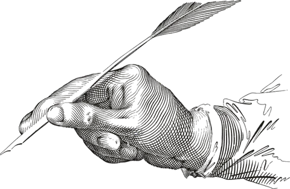
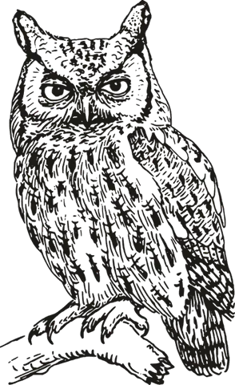
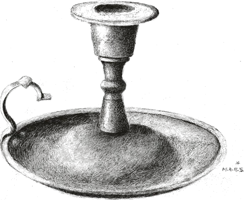

Абайдың қара сөздері
Адамгершілік, білім және еңбек туралы ой
Орындаған: Ерболатқызы Айкөркем · 2026 ж.
Негізгі тақырыптар
I
Толық адам
— ыстық қайрат, нұрлы ақыл, жылы жүрек бірлігі.
II
Білім мен ғылым
— адамды хайуаннан айыратын қасиет.
III
Еңбек
— жалқаулық пен мақтанды жеңетін жол.
02

“
Адам баласын заман өсіреді, кімде-кім жаман болса, замандасының бәрі виноват.
— Абай Құнанбайұлы
Білім мен мінез
Ақыл
Абай білімді тек кітаптан емес, өмірден, еңбектен алуға шақырады. Ғылым — мақсат емес, адам болудың құралы.
Жүрек
Ақыл мен қайратты жүрек билеуі керек. Мейірімсіз білім адамға да, елге де пайда әкелмейді.
04

Назарларыңызға рахмет!
«Ғылым таппай мақтанба» — Абай